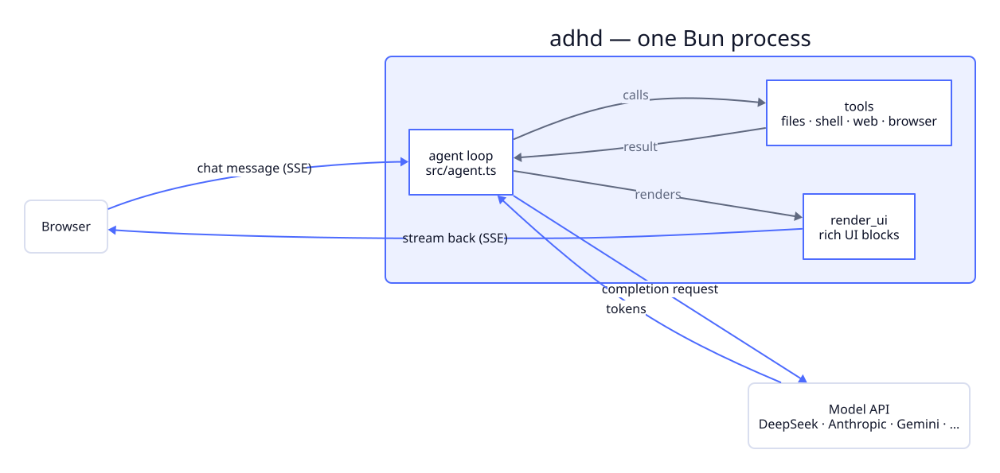
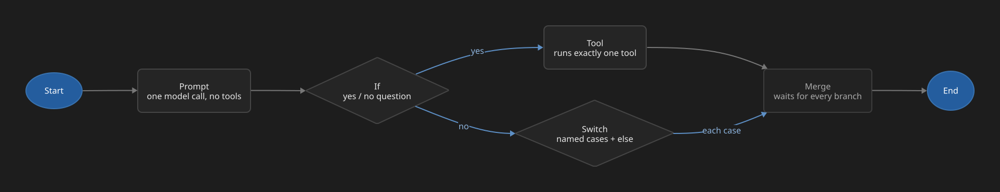

{kind=link}
The HTTP/SSE server — chat, settings, and flow routes.
Documentation
What adhd is
and how it runs.
adhd is a personal AI assistant that runs entirely on your machine: one process, no database, no cloud except the model API you choose. From a single chat box it reads and writes files, runs shell commands, searches and browses the web, remembers context, schedules tasks, and automates repeated work across multiple model providers.
01 / Installation
Quick start
- Install dependencies
bun install - Start the app
bun start - Open the local UI
http://127.0.0.1:8787
Add a provider key in Settings → Models or in a local .env file. You only need a key for the provider you use.
02 / Configuration
Choose a provider
Configure the provider you prefer in Settings. DeepSeek compatibility is fully tested; Anthropic, Gemini, and OpenAI-compatible APIs are also supported.
DEEPSEEK_API_KEY=sk-...
SERPER_API_KEY=... # optional web search
MAPTILER_KEY=... # optional map tiles
ADHD_PORT=8787 # optional server portThe default model is deepseek-v4-flash. A bare model ID routes to DeepSeek; a prefixed one like anthropic:claude-sonnet-5 picks a different provider from the part before the colon. Set fallbackModel to a model or a list of models to try if the first one gets rate-limited mid-turn — adhd switches to the next one without losing the tool results it already gathered in that turn.
Settings are merged from ~/.adhd/config.json, then ./.adhd/config.json in the current project — where both set the same key, the project wins:
{
"model": "deepseek-v4-flash",
"fallbackModel": [],
"permissionMode": "normal",
"localRoots": ["/path/you/allow"],
"capabilities": { "shell": false },
"disabledTools": ["run_script"]
}Every tool costs context: its schema and description go to the model with every message, whether or not that message uses it. capabilities switches off a whole group at once — files, shell, web, memory, skills, schedule, mcp, subagents, flows, renderUi, todo — so a chat that only needs writing help isn't also paying for a browser it never touches. disabledTools does the same for one tool by name, MCP tools included.
03 / Architecture
One process, no backend.
adhd is a single Bun process. It serves the browser UI, runs the agent loop, and executes every tool call in that same process — there's no separate API server and no database. A request looks like this: you send a message over the UI's SSE connection → the agent loop (src/agent.ts) streams the model's reply and, when it calls a tool, runs that tool in-process and feeds the result back to the model → if a tool needs your OK (writing a file, running a shell command), a confirmation card appears and the turn waits for it → the reply and any rich blocks (tables, galleries, maps, Mermaid diagrams) stream back over the same connection. If the model is rate-limited mid-turn, it retries with the next model in your fallback list without losing the tool results already gathered.

Assembles config, models, tools, and the system prompt into one agent.
The turn loop: streams text and tool calls, retries, falls back between models.
The built-in file/shell/web tools and the headless-Chrome browser tool.
The Flow graph runner described below.
Connects to MCP servers and exposes their tools, approval-gated.
The server only accepts loopback Host headers (no DNS rebinding), requires state-changing requests to be same-origin (CSRF), and serves local files only from folders you've allowed, under a locked-down CSP. src/sanitize.ts strips injection vectors before content reaches the model or the UI.
04 / Tools
What each tool does
Every capability below can be switched off independently in Settings. Tools marked asks first pause the turn for a confirmation card before they run — see Permissions for when that confirmation is skipped.
read_file / write_fileRead or write a text file.
list_dir / grep / globList, regex-search, or glob for files.
bash / powershellRun a shell command. Asks first.
run_scriptWrite and run a Bun/TypeScript snippet. Asks first.
web_searchSearch the web — pages, images, videos, places, shopping, news.
browserDrive headless Chrome: read a page as markdown, screenshot, click, type, eval JS. Asks first on changes.
remember / recallSave or load a durable memory about you.
scheduleAdd, list, or remove scheduled tasks.
spawn_agent / loop_taskDelegate a subtask to a subagent, or iterate a hard task across passes.
run_flowRun a saved Flow by name.
render_uiDraw a rich block — image, gallery, table, chart, map, sources.
Tools from any MCP server you add appear here too, named <server>_<tool>.
Approving a shell command only ever "always allows" the program itself — git, say — not a full command line, so it can't be tricked into blanket-approving whatever gets chained after it. Tool results are also trimmed to a few thousand characters before they go back to the model, so one huge file or scraped page doesn't eat your whole context window in one call.
05 / Memory
What it remembers, and why
Each memory is a small markdown file under ~/.adhd/memory/: a title, a one-line description, tags, and a freeform body, with a type like preference or project-fact at the top. adhd only saves one when you explicitly ask it to, or when it runs into a fact about you that's genuinely durable — a stable preference, how your setup works — not conversation trivia or anything it could just work out again by reading your code.
The system prompt lists every memory's id and description, not its full body, so the model calls recall to pull the full content only for whichever memory a task actually needs. Every save or update is logged, dated, to ~/.adhd/memory/log.md, so you can see what it decided was worth remembering and when. The files are plain markdown — read, edit, or delete them yourself whenever you like.
06 / Flows
Visual automation
A Flow is a workflow you draw on a canvas in the Flow studio — each node is a plain function, not an agent, and it runs server-side. Nodes: Start/End mark where a run begins and stops, Prompt makes one model call with no tools, If asks a yes/no question and follows the matching branch, Switch sorts input into named cases, Tool runs exactly one tool, and Merge waits for every incoming branch before continuing. Each node's output becomes the next node's input: {{prev}} in a field is replaced by it, and {{key}} reads back any earlier node you gave that output key. Branches that fan out run in parallel; a 30-step cap stops any accidental cycle.
{kind=link}

Run a Flow from the canvas's Run button, by asking in chat, or by scheduling it (Settings → Schedule, prompt flow:<id>).
07 / Scheduling
Tasks that run themselves
The schedule tool adds, lists, or removes tasks. Each one has an id, a time, and a prompt that runs exactly as if you'd typed it into chat. Give the time as "09:00" to fire once a day, or "every 30m" / "every 2h" for an interval. When a task fires you get a desktop notification, and if its prompt is flow:<id>, it runs that saved Flow instead of a normal chat turn.
A schedule only fires while adhd is actually open — it isn't a background daemon or a cron job, so nothing runs while your laptop is asleep or the tab is closed. Tasks and their times are kept in ~/.adhd/schedule.json.
08 / Subagents and multi-pass tasks
Delegating and iterating
spawn_agent hands a self-contained subtask to a fresh subagent, which works through it with the same tools and hands back a short result — the answer, not a step-by-step narration of how it got there. Subagents can't spawn subagents of their own, so delegation only ever goes one level deep.
loop_task is for work that genuinely needs several rounds. adhd first asks you to approve a maximum number of passes, then runs one subagent across them. On its first pass, the subagent writes a short checklist — the outcomes the task must satisfy and how it'll verify each one — before touching any of the actual work. On later passes it works through whatever isn't checked off yet, verifying as it goes. The loop stops the moment every item is checked, or after 15 passes at most, whichever comes first.
09 / Permissions
Choose the boundary
Settings → Permissions controls when adhd stops to ask before doing something:
Ask every timeEvery side effect gets a confirmation card, no exceptions.
Normal (default)Asks before anything that changes your machine, minus what you've already approved.
Approve everythingNever asks — for a sandbox you don't mind losing.
Flow tool nodes are the one exception: you built the graph and pressed Run, so they execute without asking. A confirmation nobody answers within 5 minutes is declined automatically, so a scheduled run doesn't hang.
10 / Extending
Tools, skills, and MCP servers
Three ways to add capability without touching adhd's own code, all loaded once at startup from ~/.adhd/ — or a project's own ./.adhd/, which layers on top of it:
Drop a file at tools/<name>.ts that default-exports an AI SDK tool(). The filename becomes the tool's name; a broken file just gets skipped with a warning, not a crash.
Add skills/<name>/SKILL.md with name and description frontmatter. The model sees the description up front and calls use_skill to load the full body only when a task actually needs it.
Add one in Settings → MCP servers, or write it into config.json yourself. adhd connects over stdio at startup and exposes its tools as <server>_<tool>.
{
"mcpServers": {
"notes": { "command": "npx", "args": ["-y", "@some/notes-mcp"], "trust": "ask" }
}
}MCP tools are approval-gated like bash by default, since a server you didn't write can do anything its schema doesn't tell you upfront. Mark one "trust": "read" once you've confirmed it only reads — a docs lookup, a search index — and its calls stop asking. Only local, stdio-based servers are supported; remote HTTP/SSE servers aren't.
11 / Local storage
Where data lives
Everything lives under ~/.adhd/ — no database, no hosted account:
secrets.jsonAPI keys.
config.jsonThe settings shown above.
memory/Durable memories, plus a dated log of what was saved.
schedule.jsonScheduled tasks.
flows.jsonSaved Flows.
tools/<name>.tsYour custom tools.
skills/<name>/SKILL.mdYour skills.
A project's own ./.adhd/ can keep the same layout — its config, tools, and skills layer on top of the ones in your home folder, and win where the two disagree. Model requests still go to whichever API provider you configure — that's the only network traffic that leaves your machine on your behalf.